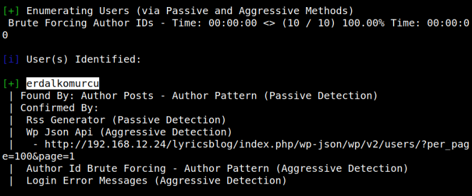

3.1 Wpscan
Use wpscan to find more about Wordpress
With this command, we are telling the wpscan to enumerate(-e) all themes(at), all plugins(ap) installed on the wordpress site. And finally, all the users(u) that might be logged in on the WordPress Site.
$wpscan --url http://192.168.12.24/lyricsblog/ -e at -e ap -e u
Output:

There's an user called “
erdalkomurcu”.